地政学
モガディシュはアフリカの角でインド洋航路、国内政治、国際支援、治安協力が交差する首都です。港と空港は国家の窓口で、政府機関、援助機関、軍事的警戒、地方との交渉が市民の移動や物価へ直結する街です。
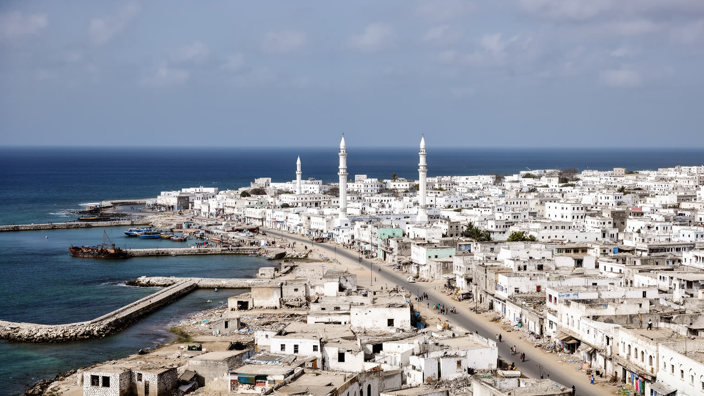
🇸🇴 ソマリア / 東アフリカ / World City Atlas
インド洋の港、ソマリアの首都機能、紛争の記憶、再建する街路、市場、モスク、送金、海風の暮らしが重なるアフリカの角の都市です。
都市の骨格
モガディシュは古いインド洋交易の港であり、現在のソマリア国家を動かす首都でもあります。市場、空港、港、住宅地、モスク、治安の境界が近く、都市の変化は生活費と移動の感覚にすぐ現れます。
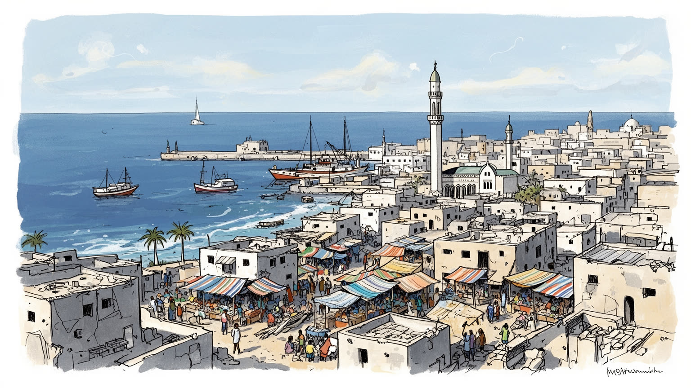
モガディシュはアフリカの角でインド洋航路、国内政治、国際支援、治安協力が交差する首都です。港と空港は国家の窓口で、政府機関、援助機関、軍事的警戒、地方との交渉が市民の移動や物価へ直結する街です。
港湾、行政、通信、銀行、建設、小売、交通、教育、飲食、送金業が雇用を支えます。公式統計に出にくい露店、家族商店、配達、修理、日雇いも多く、海外親族からの送金が起業や家計を支える重要な資金源です。今日も続きます。
イスラムの礼拝、ソマリ語の詩、海の交易記憶、氏族関係、結婚式、ラマダン、茶と食事の社交が都市の時間を作ります。モスクは信仰だけでなく、助言、教育、寄付、近隣の支え合いが交わる生活の軸です。声も街に残ります。
海岸や歴史的建物は魅力ですが、住民の日常は家賃、治安、断水、停電、通学、検問、物価、医療で形づくられるのです。訪問は安全確認が前提となり、観光の視線も再建と生活の現実を同時に見る必要があります。街角の営みも見ます。
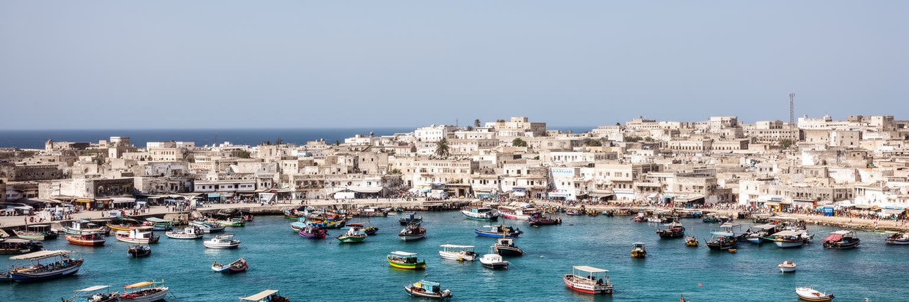
モガディシュは、アフリカの角からインド洋へ開く港として長い時間を生きてきました。古い交易の記憶は、アラビア半島、ペルシャ湾、インド洋西部、スワヒリ沿岸を結んだ商人、学者、船乗りの移動に重なります。現在の港は、食料、燃料、建材、消費財、人道支援物資を受け入れる都市の生命線であり、税関、倉庫、輸送会社、荷役、両替、金融、保険、警備、食堂、露店を周囲に集めます。海に面することは国際性だけでなく脆さも意味します。船便の遅れ、港湾料金、治安上の制約、燃料価格の上昇は、すぐ市場の値札と家庭の食卓へ届きます。港で働く人の一日は、世界市場と市内の家計を結ぶ細い線の上にあります。モガディシュを読むには、白い海岸線や旧市街の面影だけではなく、コンテナ、冷蔵倉庫、砂埃を上げるトラック、道路の検問、港から市場へ向かう荷の流れを見る必要があります。海は眺めではなく、都市の物価、雇用、外交感覚を動かす基盤です。漁船や小さな浜の作業場も、港湾の大きな数字だけでは見えない生活経済を示します。若者は荷役、運転、警備、販売、通訳の仕事を探し、家族は港から入る米や油の価格に敏感になります。港が安定して動くことは、首都の食料安全保障そのものでもあります。倉庫から市場までの短い道にも、多くの手数料、待ち時間、交渉、警戒が挟まっています。朝の港も都市の脈です。
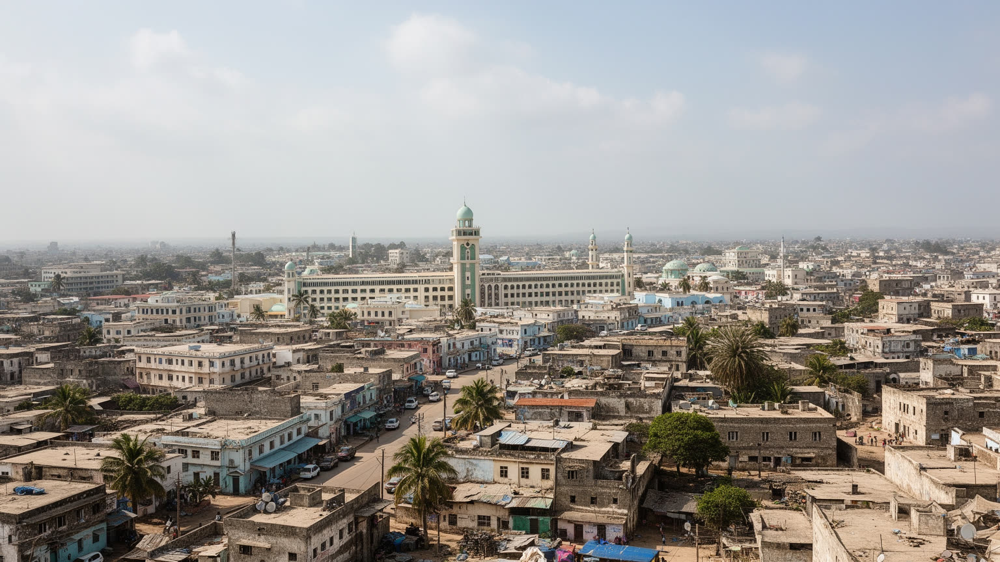
モガディシュはソマリア連邦政府の首都として、官庁、議会、裁判、外交団、大学、病院、報道、治安機関、国際機関を集めます。ですが首都性は威厳のある建物だけでなく、身分証、通行、給与、学校、医療、土地登記、援助配分、空港利用、港湾手続きとして住民の日常へ現れます。国内の連邦州、氏族、宗教指導者、企業家、ディアスポラ、国際支援者の利害が交差するため、都市の政治は単純な中央集権ではありません。首都に仕事とサービスが集まる一方、攻撃の標的になる不安や、警備による移動の制約も強いです。地方から来る学生、患者、商人、避難世帯は、首都を頼りにしながら家賃と交通費の重さに向き合います。行政機能が少しずつ回復すると、民間投資や教育の機会も増えるが、信頼の薄い制度では手続きの遅れや不公平が生活を圧迫します。モガディシュの国家性は、国旗の掲げられた施設より、窓口へ行く時間、検問を抜ける緊張、役所に届く書類の重さに表れるのです。首都で暮らす人は、政治を遠いニュースとしてではなく、道路の封鎖、書類の発行、学校の予算、病院の薬、空港へ向かう安全として経験します。国家の再建は制度の言葉で語られるが、住民には待ち時間と費用として届きます。だから首都の信頼は、議場の演説よりも、約束された公共サービスが地区ごとに本当に届くかで測られるのです。日常の窓口が試金石です。
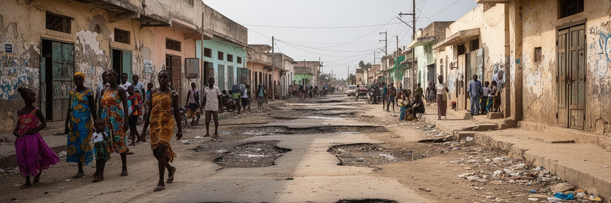
モガディシュの近現代は、国家崩壊、内戦、民兵支配、国際介入、過激派攻撃、避難、再建の重なりを避けて語れありません。破壊された建物、補修された壁、空き地、検問、警備されたホテル、混雑する道路には、暴力の記憶と普通の生活を取り戻そうとする力が同居しています。紛争を軍事の年表だけで読むと、学校を再開する家族、店を開ける商人、帰還するディアスポラ、壁を塗り直す職人、通勤路を選ぶ若者が見えなくなります。再建は道路やビルを増やすことだけではありません。信頼できる警察、裁判、保険、銀行、学校、病院、公共照明、排水、住宅市場がそろって初めて、都市は安心して使える場所になります。暴力の恐れは移動時間、結婚式の会場、子どもの通学、店の営業時間まで変えます。モガディシュの強さは、危険を美化することではなく、傷を抱えながら生活の手続きを積み直している点にあります。再建の写真の裏には、見えにくい心の負担、家族の分散、失われた資産、警戒の習慣が長く残ります。復旧した道路の隣に未修理の壁が残り、新しい店の背後に避難の記憶が残ることも多いです。治安が少し改善しても、信頼は一日で戻りません。街を使い直す反復が、都市の回復を少しずつ現実にします。記憶を急いで消すより、被害を認めながら通学、商売、礼拝、祝いを続けることが回復の土台になります。沈黙もまた都市の記憶です。
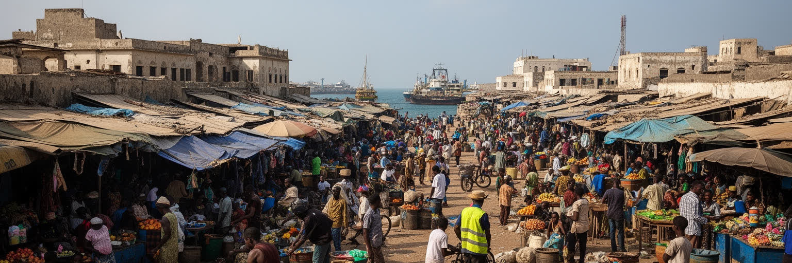
モガディシュの経済は、港湾と官庁だけでなく、市場、露店、倉庫、バス、タクシー、修理工房、建設現場、携帯送金、茶屋、家族商店の細かな働きで成り立つのです。バカラ市場のような大きな商業空間では、食料、衣服、電化製品、建材、薬、通信機器、輸入品が混ざり、値段交渉と信用が日々の取引を支えます。公式な雇用が限られる都市では、親族や同郷者のつながりが仕入れ、借り入れ、就職、店番を助けるのです。港から届く商品は、卸売商、運転手、荷運び、警備、露店主、家庭の買い物へ連なり、国際価格が一つの皿の食事にまで影響します。若者にとって市場は収入の入口である一方、収益の不安定さ、治安、賃料、取り締まり、教育機会の不足も抱えます。女性の小商い、在宅の食品作り、送金の管理は統計に出にくいが、家計を支える重要な労働です。モガディシュの市場を見ることは、都市が危機の中でどのように現金、信用、労働、親族関係を組み合わせて生き延びるかを見ることです。店の奥では携帯電話で送金を確認し、外では荷を運ぶ人が日払いの仕事を待つのです。商売は安全な通り、信頼できる相手、家族の協力があって初めて回るのです。市場は都市の不安定さと創意が最もよく見える場所です。物を直して長く使う修理の仕事や、少量だけ売る露店も、現金の少ない家計には欠かせません。朝の仕入れが一日を決めます。
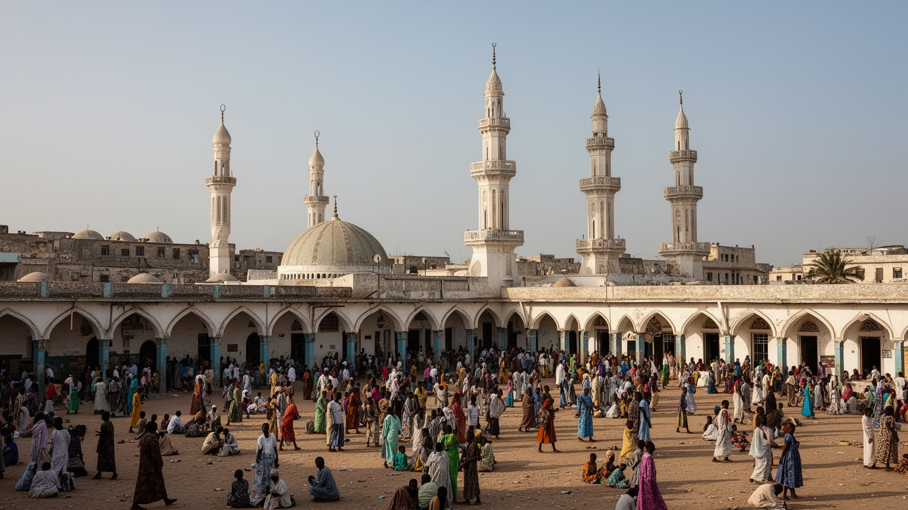
モガディシュの都市生活はイスラムのリズムと深く結びつきます。礼拝の呼びかけ、金曜の集まり、ラマダン、イード、結婚式、葬儀、寄付、クルアーン教育は、港や市場の忙しさとは別の時間を街に刻むのです。モスクは祈りの場であるだけでなく、相談、和解、教育、募金、近隣の情報交換の場所にもなります。ソマリ社会では氏族関係や家族の名誉が重要ですが、宗教的な規範は商売の信用、困窮者への支援、日々の振る舞いにも関わります。紛争期には宗教の言葉が人を支える一方、政治的な利用や過激派による暴力も都市の記憶を傷つけてきました。だから信仰を単純に平和や対立の記号へ縮めることはできません。礼拝後の挨拶、茶を囲む会話、親族への訪問、断食明けの食事、子どもの学びを通じて、宗教は生活を組み立てる実践として働きます。モガディシュを読む時、ミナレットを景観として眺めるだけでは足りません。祈りが市場の開閉、家庭の支出、慈善、若者の教育、喪失からの回復をどう支えているかを見る必要があります。日々の信仰は、争いを避ける作法や困った家族を助ける判断にもつながります。モスクの中庭や近くの店で交わされる短い会話が、都市の信頼を少しずつ補修しています。祝祭の準備では支出の負担も増えるが、贈り物や食事の分け合いが親族と近隣を結び直します。宗教の時間は街の記憶を保つ器でもあります。声が日々を整えるのです。
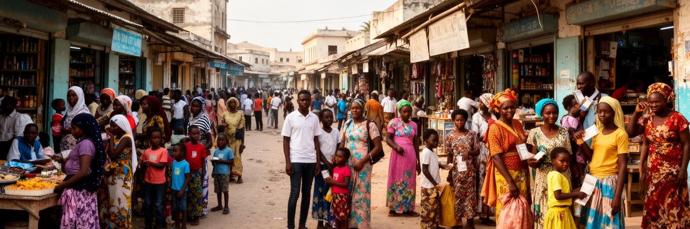
モガディシュの再建と家計を考える時、海外に暮らすソマリ人の存在は欠かせません。北米、欧州、湾岸諸国、東アフリカへ広がったディアスポラは、送金、投資、教育費、医療費、住宅建設、店の開業、結婚式の費用を通じて都市と結び続けます。送金会社や携帯金融は、銀行制度が弱かった時期にも家族を支える回路になり、現在も小規模商業や住宅市場を動かす重要な仕組みです。遠い都市で働く親族の収入は、モガディシュの家賃、学校選び、起業、病院の支払いへ変わります。ですが送金は安定だけをもたらすわけではありません。国外に親族を持つ世帯と持たない世帯の格差、外貨への依存、土地価格の上昇、帰還者と地元住民の感覚のずれも生みます。帰還した人は新しい商売や専門技能を持ち込む一方、治安や制度への期待が現実とぶつかることもあります。モガディシュは国内の首都であると同時に、世界に散った家族ネットワークの結節点です。空港の到着ロビー、送金窓口、建設中の家、英語やアラビア語が混ざる会話に、その遠距離の都市性が表れています。送金は家族の愛情であると同時に、都市計画や金融政策にも影響する資本です。小さな毎月の仕送りが学費になり、店の在庫になり、家の一部屋を直す費用になります。遠い場所での雇用不安も、時間差でモガディシュの家計へ届きます。その結びつきは都市を外へ開くが、期待を背負う家族の緊張も増やすのです。
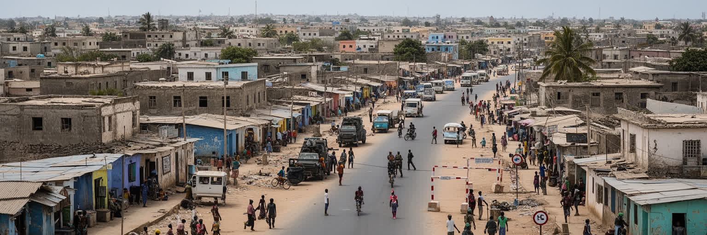
モガディシュの住まいは、海沿いの地区、古い街区、郊外の新しい住宅、避難してきた人びとの居住地、警備された施設周辺まで幅広いです。人口増加と帰還、投資、避難が重なり、土地と家賃は多くの世帯に重い負担となります。安全な道路に近いか、学校や病院へ通えるか、水を買いやすいか、停電時に発電機を使えるかは、住宅の価値を左右します。治安の問題は抽象的な危険ではなく、どの道を通るか、夜に店を開けるか、子どもが一人で歩けるか、家族がどこへ引っ越すかを決める生活条件です。避難民キャンプや非公式居住地では、土地権利、衛生、排水、医療、教育、女性の安全が特に脆いです。新しい建設は都市の活力を示すが、計画や公共サービスが追いつかなければ、格差と混雑を広げます。家は単なる私有財産ではなく、親族を迎え、送金を受け、商売を相談し、危険を避ける基地でもあります。モガディシュの都市再建は、道路や高層建築の増加だけで測れません。人びとが不安なく眠り、通学し、客を迎えられる住宅地を広げられるかが、都市の回復を決めます。家の壁は外の危険を遮るだけでなく、親族の記憶と将来への投資を守る境界でもあります。安全な住まいが増えれば、学校、店、診療所も根を下ろしやすくなります。逆に住宅が不安定なままなら、再建の成果は毎日の恐れに削られてしまうのです。安心は玄関から始まります。
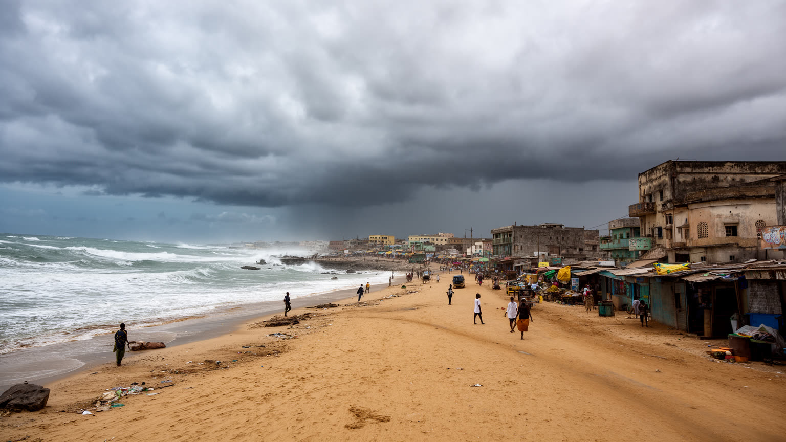
モガディシュの気候は、赤道に近い沿岸にありながら、乾いた季節と海風が組み合わさるのです。暑さは強いが、インド洋からの風が体感を和らげ、雨は季節ごとに偏るのです。街路の砂、低い植生、白い建物、日陰を求める市場の配置、海辺の夕方の人出には、この気候への適応が見えます。水は都市生活の基礎であり、断水や価格上昇は料理、洗濯、衛生、学校、病院、建設を直撃します。強い雨が降ると排水の弱い道路や低地の住宅地で浸水が起きやすく、乾燥期にはほこりと暑さが健康を圧迫します。海岸都市であることは、港と観光の可能性を与える一方、海岸侵食、高潮、廃棄物、下水、海洋汚染の問題も抱え込むのです。砂浜は住民の休息の場であり、同時に都市開発と安全管理の対象でもあります。気候変動は遠い将来の話ではなく、雨の強さ、水の入手、食料価格、病気、道路の状態として日常に現れます。モガディシュを読むには、海の青さだけでなく、風、砂、水タンク、排水路、日陰、海岸の土地利用を見る必要があります。気候は背景ではなく、都市の暮らしを形づくる実際の力です。涼しい海風の時間には家族が外へ出て、店先の会話も増えます。逆に暑さや水不足が強まる日は、学校、仕事、医療の予定が変わります。沿岸の環境管理は景観ではなく、健康と家計の問題でもあります。海岸のごみや排水も、観光以前に住民の安全を左右します。
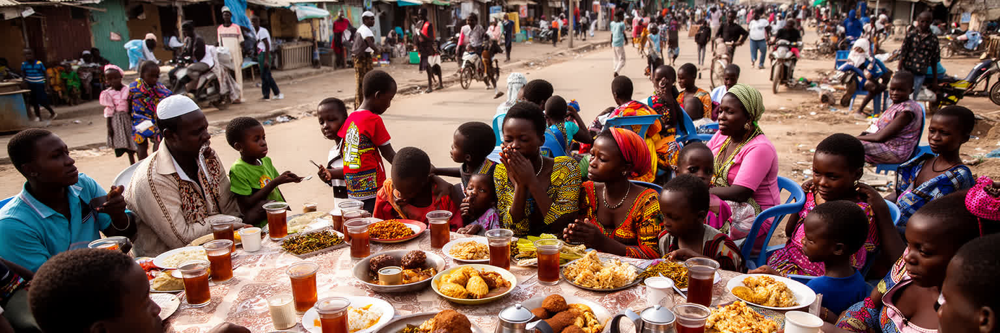
モガディシュの文化は、ソマリ語の詩、口承、音楽、イスラムの礼儀、海港の交易、遊牧社会の記憶、イタリア統治の痕跡、ディアスポラの感覚が混ざり合うのです。食卓には米、パスタ、魚、肉、スパイス、バナナ、甘い茶、サンブーサ、平たいパンが並び、家庭、屋台、茶屋、結婚式で都市の社交を作ります。料理は単なる味ではなく、輸入品の価格、港の物流、家族の送金、祝祭の支出、宗教的な時間とつながります。詩や歌は政治、愛情、記憶、喪失を語る力を持ち、ラジオや携帯電話、動画を通じて国内外のソマリ人を結びます。服装や言葉、音楽の好みには世代差があり、若者は保守的な規範と世界的な都市文化の間で表現を探します。女性の料理、手仕事、教育、商いは家庭の内側に見えがちですが、都市文化を維持する大きな力です。モガディシュの魅力は、古い港町の面影だけでなく、危機を越えて人が食卓を囲み、冗談を交わし、客をもてなし、詩で出来事を記憶する日常にあります。文化は飾りではなく、都市が自分を保つための技術でもあります。茶を出すこと、客に席を譲ること、結婚式の歌を覚えることは、社会の関係を保つ小さな作法です。国外で育った若者が戻ると、言葉や食の記憶が家族の会話をつなぎ直すのです。食卓の作法は、都市が遠い世界と家の内側を結ぶ最も身近な場所です。味は記憶も運びます。香りも家族を結びます。
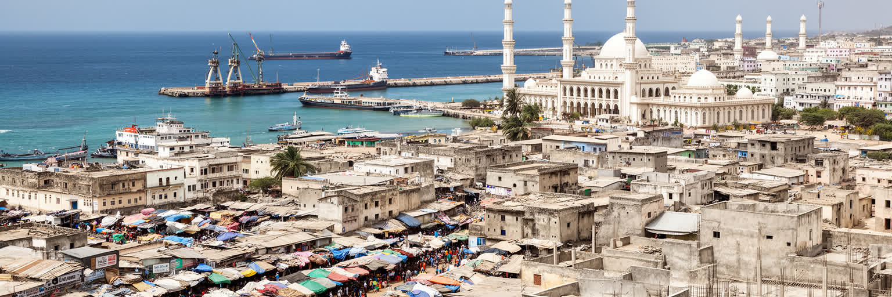
モガディシュを世界の都市地図に置く時、治安のニュースだけで理解するのは不十分です。もちろん暴力の記憶と警戒は都市の現実であり、訪問や投資の前提を大きく左右します。しかし同じ街には、インド洋港湾の物流、ソマリア国家の制度、氏族と宗教の社会関係、市場の信用、ディアスポラ送金、住宅建設、海岸の休息、若者の学び、女性の小商いが同時にあります。統計が限られるため、都市の経済力は数字だけでは見えにくいです。港の荷、送金窓口、建設中の家、学校へ向かう子ども、茶屋の会話、モスクの寄付、海辺の人出を重ねて読む必要があります。モガディシュの重要性は、国家崩壊後の再建という政治的意味だけではありません。アフリカの角、インド洋、イスラム世界、ディアスポラ、都市貧困、気候リスクが一つの市街地で交差する点にあります。美しい海岸と危険、商業の活力と制度の弱さ、家族の支援と格差、信仰と政治を分けずに見ると、この都市は単なる紛争地ではなく、現代都市の脆さと回復力を鋭く映す場所として立ち上がるのです。読むべきものは、完成した復興の物語ではなく、生活を続けるための小さな調整です。港の朝、検問を避ける道、祈りの時間、市場の信用、送金の通知が重なる時、モガディシュの現在が見えてきます。そこには恐れだけでなく、都市を使い続ける人びとの判断と技術があります。今も続く都市です。